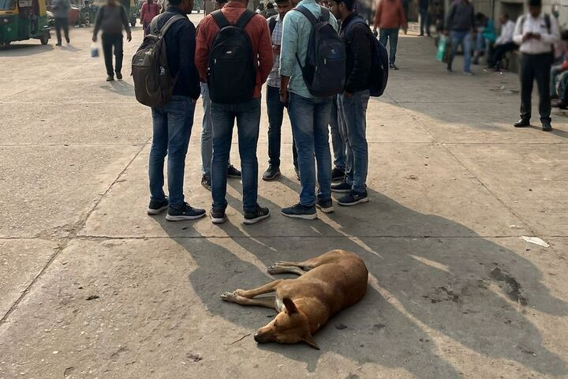

PMC headquarters · Civic
Activists dump dead dog at PMC headquarters over carcass delay
Residents who asked the PMC veterinary department to remove the carcass of a dog hit by a two-wheeler at Zambare Chawdi in Kasba Peth were allegedly passed from one contact number to another.

IllustrationA group of youths and Patit Pavan Sanghatana activists brought a dead dog to the PMC headquarters around 2.15pm and dumped it at the entrance on Thursday over the delay in lifting the carcass.
Around 10am, a two-wheeler hit the dog at Zambare Chawdi in Kasba Peth. Residents contacted the PMC veterinary department to get the carcass removed but were allegedly passed from one contact number to another without a response.
The protest was against the civic body’s inaction. The contractor’s staff arrived to collect the carcass only after a delay of around one-and-a-half hours, even after senior officials intervened.
PMC veterinary officer Dr Sarika Bhosale said a show-cause notice had been issued to the contractor concerned.
Area Kasba Peth · All areas
Seen a mistake? Tell us